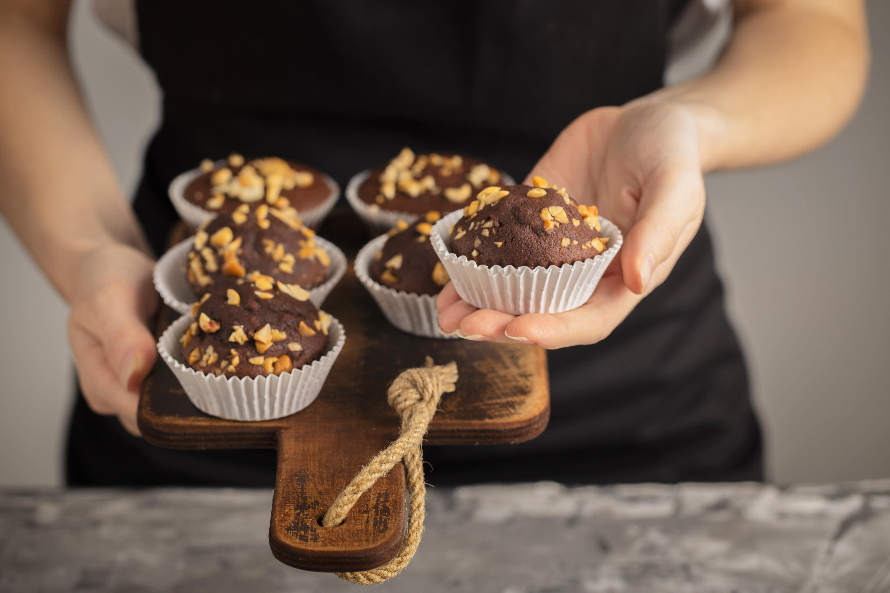
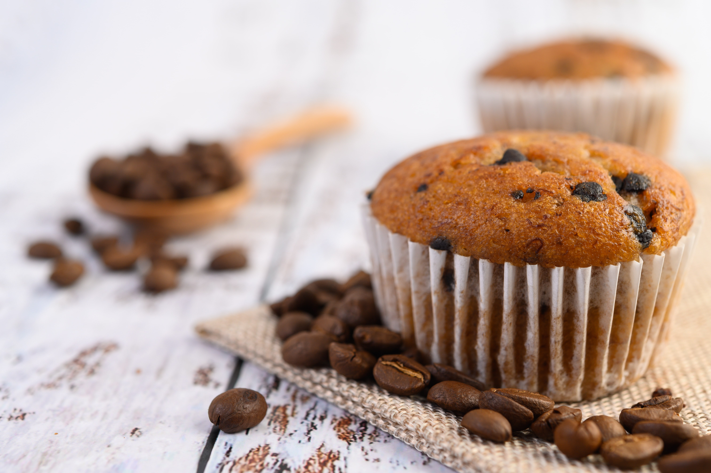
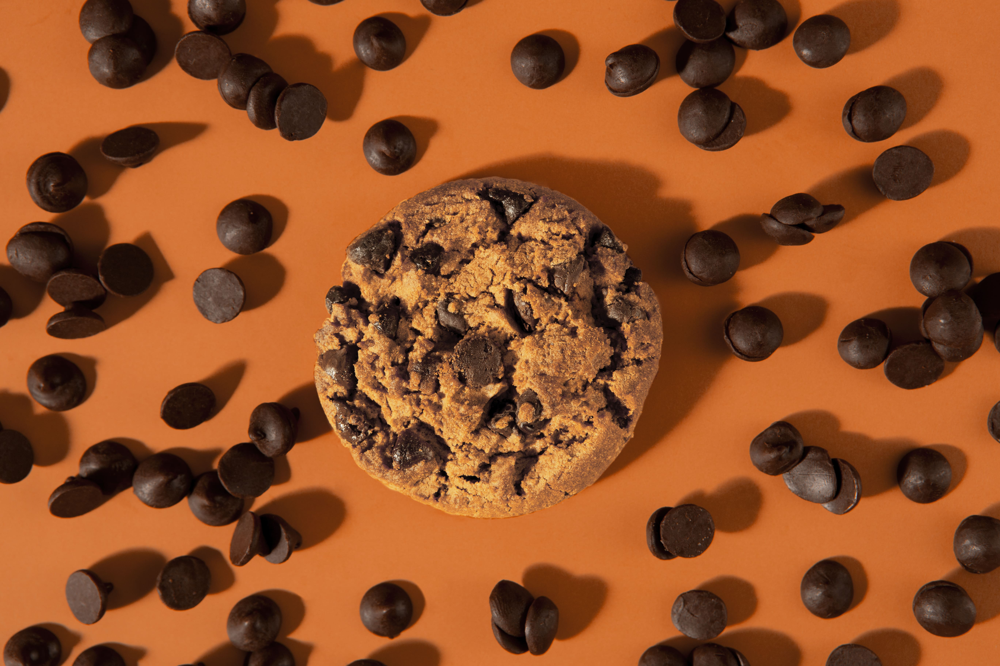

RECETAS DE REPOSTERÍA
La repostería es el arte de preparar y decorar dulces, pasteles y otros postres que deleitan tanto a la vista como al paladar. Utilizando ingredientes como harina, azúcar, huevos y mantequilla, la repostería va más allá de simples recetas, transformando estos elementos en exquisiteces como tartas, galletas, cupcakes y mousses. Esta disciplina combina técnicas precisas con una creatividad sin límites, permitiendo explorar sabores y texturas que convierten cada postre en una obra maestra deliciosa y memorable.
TORTA HÚMEDA DE CHOCOLATE
Para preparar una deliciosa torta húmeda de chocolate, empieza por reunir los ingredientes secos. Necesitarás 200 gramos de harina de trigo, 200 gramos de azúcar, 75 gramos de cacao en polvo sin azúcar, 1 1/2 cucharaditas de polvo de hornear, 1 cucharadita de bicarbonato de sodio y una pizca de sal. En un bol grande, mezcla todos estos ingredientes secos para asegurarte de que estén bien combinados. En otro bol, bate 2 huevos grandes hasta que estén espumosos, luego añade 120 ml de aceite vegetal y 240 ml de leche tibia. Mezcla bien y agrega 2 cucharaditas de extracto de vainilla. Incorpora gradualmente los ingredientes secos a la mezcla líquida, batiendo a baja velocidad hasta obtener una masa suave y homogénea.

Para darle un toque aún más chocolateado, añade 100 gramos de chocolate semidulce en trozos pequeños o chispas de chocolate a la masa y mezcla suavemente. Vierte la mezcla en un molde para torta previamente enharinado y enmantecado.
Hornea en un horno precalentado a 180°C (350°F) durante 30-35 minutos. La torta estará lista cuando un palillo insertado en el centro salga limpio o con solo unas migas húmedas. Deja enfriar la torta en el molde durante unos 10 minutos antes de desmoldarla y transferirla a una rejilla para que se enfríe completamente.
Para un acabado perfecto, puedes glasear la torta con un ganache de chocolate. Para hacerlo, calienta 200 ml de crema para batir en una cacerola hasta que esté casi hirviendo, luego vierte sobre 200 gramos de chocolate semidulce picado. Revuelve hasta que el chocolate se derrita y la mezcla esté suave. Deja enfriar ligeramente antes de verter sobre la torta.
¡Disfruta de esta torta húmeda de chocolate, perfecta para cualquier ocasión especial o para simplemente consentirte con un delicioso postre!
MUFFIN
Para hacer unos deliciosos muffins esponjosos, comienza preparando los ingredientes secos. Necesitarás 250 gramos de harina de trigo, 150 gramos de azúcar, 1 cucharadita de polvo de hornear y 1/2 cucharadita de bicarbonato de sodio. En un bol grande, mezcla bien estos ingredientes secos. En otro bol, bate 2 huevos grandes y luego añade 120 ml de aceite vegetal y 200 ml de leche tibia. Agrega 1 cucharadita de extracto de vainilla y mezcla bien. Una vez que los ingredientes líquidos estén combinados, vierte la mezcla sobre los ingredientes secos. Revuelve suavemente hasta que los ingredientes se incorporen, pero sin mezclar en exceso; la masa debe quedar un poco grumosa.
Para darle un toque especial a tus muffins, añade 150 gramos de chispas de chocolate, frutos secos, arándanos o lo que prefieras. Mezcla con cuidado para distribuir los ingredientes adicionales de manera uniforme en la masa.
Llena cada cavidad de un molde para muffins con la masa, usando una cuchara para helado o dos cucharas para que queden aproximadamente a 2/3 de su capacidad. Esto ayudará a que los muffins suban y formen una bonita cúpula al hornearse.
Precalienta el horno a 200°C (400°F) y hornea los muffins durante 18-20 minutos, o hasta que un palillo insertado en el centro salga limpio. Deja enfriar los muffins en el molde durante unos 5 minutos antes de transferirlos a una rejilla para que se enfríen completamente.
¡Y listo! Disfruta de estos muffins esponjosos y deliciosos, ideales para el desayuno, una merienda o cualquier momento del día.
GALLETAS DE CHISPAS
Para preparar unas irresistibles galletas con gotas de chocolate, comienza mezclando los ingredientes secos. En un bol grande, combina 250 gramos de harina de trigo, 1 cucharadita de bicarbonato de sodio y 1/2 cucharadita de sal. Revuelve bien para distribuir uniformemente los ingredientes. En otro bol, bate 115 gramos de mantequilla a temperatura ambiente con 150 gramos de azúcar moreno y 100 gramos de azúcar blanca hasta que la mezcla esté suave y cremosa. Añade 1 huevo grande y 1 cucharadita de extracto de vainilla, batiendo bien después de cada adición.
Gradualmente incorpora la mezcla de harina a los ingredientes húmedos, mezclando a baja velocidad hasta que la masa esté bien combinada. Finalmente, agrega 150 gramos de gotas de chocolate (puedes usar chocolate semi-amargo, oscuro o con leche, según tu preferencia) y mezcla suavemente para distribuirlas en la masa.
Precalienta el horno a 180°C (350°F). Forra una bandeja para hornear con papel pergamino o usa un tapete de silicona. Con la ayuda de una cuchara para helado o dos cucharas, coloca montones de masa en la bandeja, dejando espacio suficiente entre ellos para que las galletas puedan expandirse durante el horneado.
Hornea durante 10-12 minutos, o hasta que los bordes estén dorados pero el centro aún parezca suave. Deja las galletas enfriar en la bandeja durante 5 minutos antes de transferirlas a una rejilla para que se enfríen completamente. ¡Y listo!
Disfruta de estas galletas con gotas de chocolate, perfectas para acompañar una taza de leche o simplemente para disfrutar en cualquier momento del día.